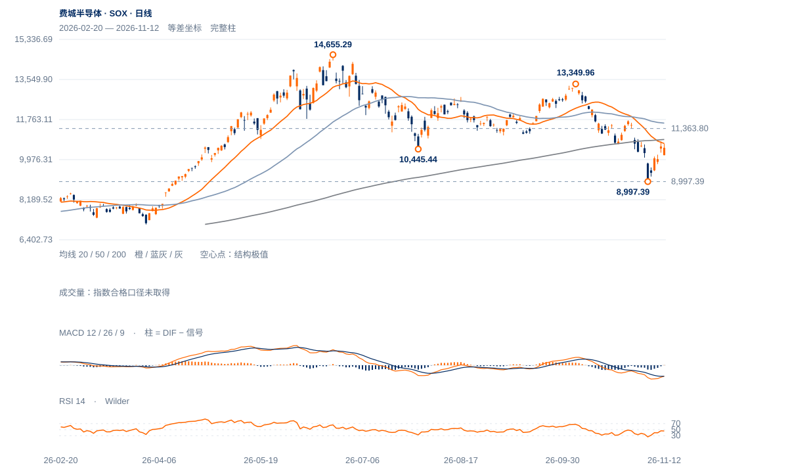

低点反弹较大，原跌幅也更大
10月6日13349.96至11月5日8997.39，跌32.6%；现10506.67较低点反弹16.8%，仅回收约34.7%的原价差。反弹强不等同原高位结构恢复。
未来1—5日仍可能出现较大双向波动，偏向反弹后检验承接；10957—11364旧缺口未被回收前，1—3周维持调整中的修复。

查看大图 ↗10月6日13349.96至11月5日8997.39，跌32.6%；现10506.67较低点反弹16.8%，仅回收约34.7%的原价差。反弹强不等同原高位结构恢复。
现价低于20日线10695.66、200日线10875.08；10月30日10957.32—11363.80下缺口未补。11日高10787.05仍未触及下缺口近沿。
11日上缺口10197.21—10287.32被12日低10174.12完全回补；12日收在日幅64.7%处，说明盘中回收仍强，但下一步保持尚待验证。
8997.39低点之后反弹幅度突出，12日低开后收回大半跌幅；若保持10174并重夺10957，旧跌势终结的证据会增加。